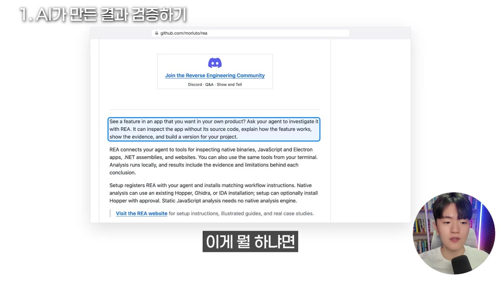
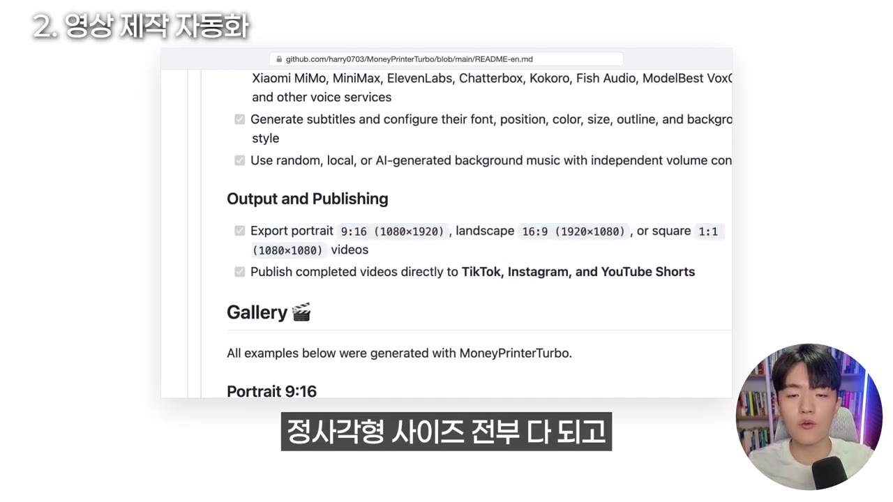
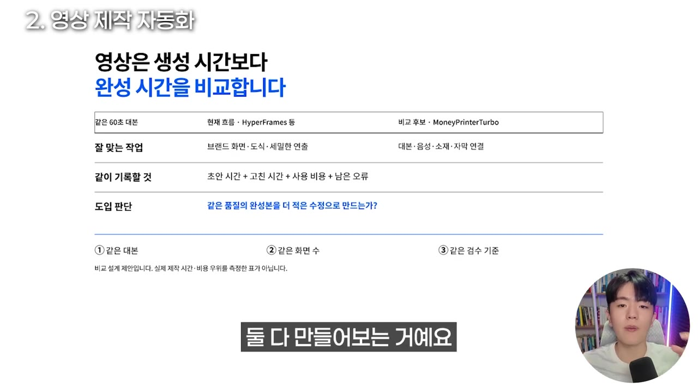
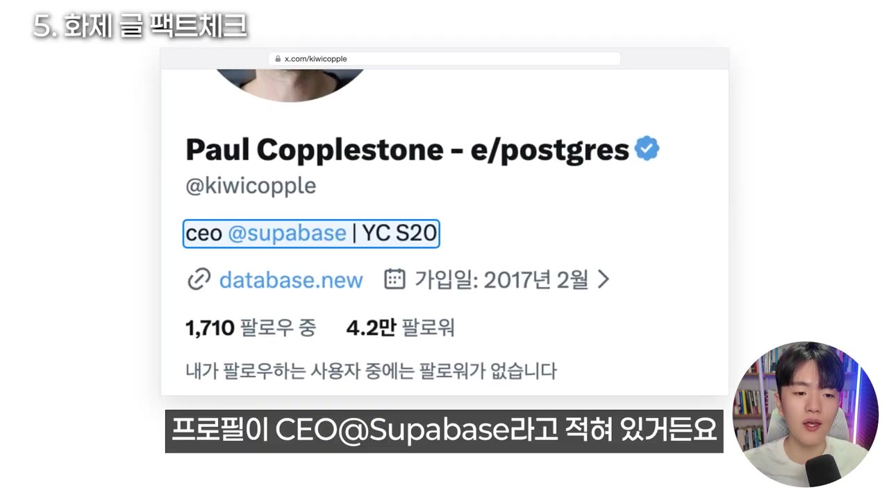
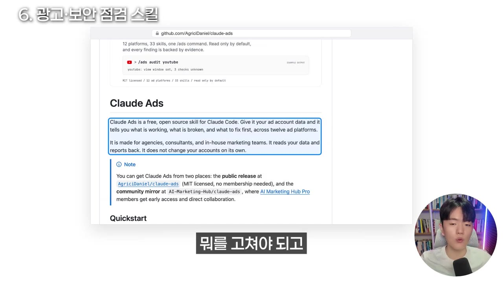
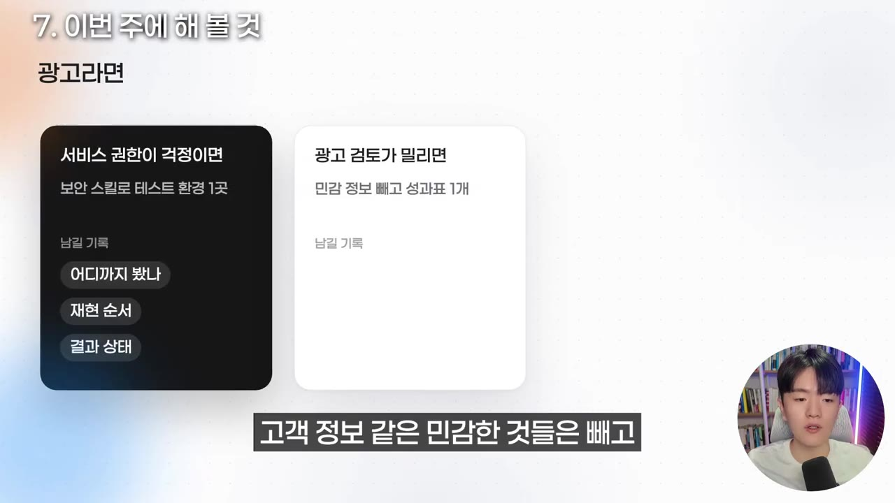

99%가 모르고 있는 최근 해외 AI 트렌드 주요 소식ㅣREA부터 미친 오픈소스 전부 공유해 드려요
▶ 원본 영상 보기한눈에 보기
- 해외에서 화제인 오픈소스 REA(Reverse Engineering Anything)는 Claude Code·Codex 같은 AI 에이전트에 분석 도구를 붙여, 소스 코드가 없는 앱이나 웹사이트도 어떻게 만들어졌는지 뜯어보게 해 줍니다. GitHub 별이 2주 남짓 만에 16만 개에서 37만 개로 늘었다고 합니다.
- 핵심은 도구가 아니라 흐름입니다. 원본을 읽고, 사양서(spec.md)로 정리하고, 다시 만들고, 원본과 비교하는 검증 루프를 끝까지 돌려야 합니다.
- 영상 제작 자동화 MoneyPrinterTurbo, 광고 점검 스킬 Claude Ads, Cloudflare 보안 점검 스킬처럼 바로 써 볼 만한 도구를 소개합니다.
- 조회수 200만짜리 화제 글도 작성자와 링크만 확인하면 이야기가 달라집니다. 화제 글은 반드시 팩트체크해야 합니다.
- 공통 교훈은 하나입니다. 만드는 AI와 검토하는 AI의 역할을 나누고, 최종 판단은 사람이 합니다.
이런 분께 도움이 됩니다
- Claude Code·Codex 등 AI 에이전트를 쓰면서 결과를 어떻게 검증할지 고민하는 분
- 쇼츠·광고·보안 점검을 AI로 자동화해 보고 싶은 분
- X(트위터)의 해외 AI 화제 글을 빠르게 걸러 보고 싶은 분
핵심 내용
REA: AI로 무엇이든 거꾸로 뜯어보기
- REA는 Reverse Engineering Anything의 앞글자입니다. 리버스 엔지니어링(역공학)은 완성된 요리를 맛보고 레시피를 알아내는 것과 같습니다. (0:36)
- Claude Code·Codex 같은 AI 에이전트에 분석 도구를 붙여, 다음 대상이 어떻게 만들어졌는지 근거와 함께 설명해 줍니다.
- 소스 코드가 없는 앱
- 내 PC에 설치된 프로그램 파일
- 자바스크립트로 만든 앱·웹사이트
- 공식 설명의 예시는 "메모 앱의 검색 기능이 어떻게 동작하는지 근거를 보여 주고, 내 프로젝트에 비슷한 기능을 만들어 줘"입니다. (1:07)

- 원문 작성자는 관련 저장소 20개를 묶어 '역공학 작업실'을 차리라고 권합니다. 영상의 의견은 20개를 다 깔 필요는 없다는 것입니다.
- 주로 쓰는 방식은 두 가지입니다.
- 내가 만들고 싶었던 것이나 자주 쓰는 프로그램을 뜯어보고 직접 만들어 보기
- 남이 만든 것을 분해해 인사이트 얻기
- GitHub 별은 10월 13일 16만 개에서 촬영일 기준 37만 개로 늘었다고 합니다.
💡 도구 20개보다 '읽기 → 설명 → 사양서'로 이어지는 흐름을 이해하는 게 핵심이다.
검증 루프: AI의 자신감을 믿지 말 것
- 원문이 강조하는 진짜 핵심은 다시 만든 결과를 원본(오라클)과 비교하는 루프입니다. (2:13)
- 오라클(oracle)은 비교 기준이 되는 원본 프로그램을 말합니다.
- 비유하면, 할머니 김치 맛을 보고 레시피를 적어 다시 담근 뒤 원래 김치와 나란히 놓고 맛보는 것입니다.
- 원본 읽기
- 사양서 작성
- 다시 만들기
- 오라클과 비교
- 사양서 보완
- 1원본 읽기
대상 프로그램 파일을 AI가 읽고 분석한다
- 2사양서 작성
spec.md에 모든 기능을 자세히 적는다(기능 명세서)
- 3다시 만들기
사양서만 보고 프로그램을 다시 만든다
- 4오라클과 비교
같은 입력을 원본과 재현본에 넣어 결과를 비교한다
- 5사양서 보완
다르면 대개 예외 상황이 빠진 것이다. 사양서에 추가하고 3단계부터 다시 한다
- 원문에 따르면 숫자 하나가 틀려도 검사를 다 통과할 수 있습니다. 그러니 AI가 자신 있게 설명했다고 똑같이 동작한다고 믿으면 안 됩니다. (2:42)
💡 기준은 사양서, 판정은 원본과의 비교다. AI의 설명은 판정이 아니다.
역할 나누기: 만드는 AI·검토하는 AI·결정하는 사람
- REA를 두 모델 조합과 함께 쓰는 글도 화제였습니다. 한 모델의 이름은 자막상 '제브/재부'로 나와 불분명하고, 다른 하나는 하이쿠(Haiku)입니다.
- 하이쿠가 조사하고, 다른 모델이 일 순서를 잡으면서 결론의 근거가 충분한지 검토하는 구조입니다. (3:16)
- 영상이 전하는 인사이트는 어떤 모델을 쓰느냐가 아니라 역할을 나누는 방식입니다.
- 만드는 AI: 무엇을 했는지 기록을 남긴다
- 확인하는 AI: 기록에 근거가 있는지 대조해 '확인한 것'과 '모르는 것'을 나눈다
- 사람: 어디까지 믿고 쓸지 결정만 한다
- 회사 결재 라인(신입이 보고서 작성 → 팀장 검토 → 대표 결재)과 비슷합니다. 지난 Codex 영상에서 말한 '실무 에이전트 + 감독관 에이전트' 구조와도 같은 맥락입니다. (3:44)
사례: Claude Code로 와이파이 공유기 고치기
- "Claude Code가 공유기를 뜯어보고 5분 만에 느려진 이유를 고쳤다"는 글이 조회수 20만, 저장 약 3,400회를 기록했습니다. (4:15)
- 공유기 촬영
- 비밀번호 분리
- 변경안 승인
- 설정 점검
- 속도 재측정
- 1공유기 촬영
공유기 사진을 찍어 Claude Code에 준다
- 2비밀번호 분리
비밀번호는 채팅창에 쓰지 않고 PC 파일로 저장한다(자막상 저장 위치 불분명)
- 3변경안 승인
Claude가 바꿀 설정값과 기존값을 하나씩 보여 주면 사용자가 승인한다
- 4설정 점검
채널 혼잡, 주파수 대역이 맞는지 확인한다
- 5속도 재측정
고칠 때마다 속도를 다시 잰다
- 영상의 교훈은 두 가지입니다. AI로 설정을 바꾸기 전에는 항상 백업하고, 고친 뒤에는 반드시 다시 측정해야 합니다. (4:49)
💡 목표와 현재 상태를 비교하는 루프 + 감독관 역할을 넣으면 결과가 명확해진다. REA와 같은 원리다.
MoneyPrinterTurbo: 쇼츠 한 편 자동 제작
- GitHub 별 13만 개가 넘는 오픈소스입니다. 주제나 키워드 하나만 넣으면 AI가 대본 작성부터 영상 소재 찾기, 자막·배경 삽입까지 해서 쇼츠 한 편을 만들어 줍니다. (5:14)
- 세로·가로·정사각형 비율을 모두 지원합니다.
- TikTok·인스타그램·YouTube에 바로 올리는 기능도 있습니다.

- '무료'의 범위는 정확히 봐야 합니다.
| 항목 | 비용 |
|---|---|
| 프로그램 | 무료 |
| 목소리 | 무료로 쓸 수 있는 것이 있음 |
| 영상 소재 | Pexels 등에서 가져올 수 있음 |
| 대본용 AI | GPT·Claude 구독이나 API 필요. 이미 쓰고 있다면 추가 비용 없음(영상 주장) |
- 지난 영상에서 소개한 하이퍼프레임(HTML로 화면을 그려 영상을 뽑는 도구)과는 잘하는 일이 다릅니다. (6:20)
- 하이퍼프레임: 채널 고유 디자인·도식 연출에 맞음
- MoneyPrinterTurbo: 대본부터 소재·자막까지 한 번에 만드는 데 맞음
- 이미 콘텐츠를 만드는 사람이라면 같은 60초 대본으로 지금 방식과 MoneyPrinterTurbo로 각각 만들어 비교해 보라고 권합니다.

💡 콘텐츠 제작의 진입 장벽이 낮아지고 있다. 다만 효율이 좋아지는지는 내 방식과 나란히 테스트해야 알 수 있다.
연기하는 AI 음성
- 자막상 'PC 오디오의 드라마 3'으로 나와 정확한 이름은 불분명한 목소리 AI를 소개합니다. 대본뿐 아니라 줄마다 연기를 말로 지정할 수 있습니다. (6:59)
- 예: "이 줄은 차분하게", "여기는 놀란 듯이", "여기는 강조"
- 중간에 웃기, 말하다 쉬기 같은 자연스러운 행동도 넣을 수 있습니다.
- 유료입니다. 일렙스(ElevenLabs로 추정) 같은 음성 AI를 쓰던 사람이라면 품질을 비교해 볼 만하다고 합니다. (7:16)
- 이런 음성 모델로 유튜브·릴스를 자동화하는 사람도 있다고 합니다.
스스로 개선하는 AI 오픈소스 10선
- X에서 화제였던 목록입니다. 영상에서 언급된 것은 다음과 같습니다. (7:56)
| 분류 | 도구 |
|---|---|
| 작업 실행 에이전트 | SWE-agent, Aider, OpenHands, AutoGPT |
| 프롬프트·프로그램 최적화 | DSPy, TextGrad |
| 평가·학습 사례 생성 | SWE-smith |
화제 글 팩트체크 사례
- "Claude 에이전트 12개를 6시간 돌려 Supabase를 복제했다" (8:21)
- Supabase는 개발자들이 앱을 만들 때 쓰는 데이터 창고 같은 서비스입니다.
- 이 글은 조회수 200만, 좋아요 6,000개 이상을 기록했습니다.
- 그런데 작성자 프로필에 'CEO @supabase'라고 적혀 있습니다. '무료 공개' 링크도 원래 있던 Supabase 공식 저장소로 연결됩니다.

- "ChatGPT가 모든 사용자의 심리 프로필을 몰래 만든다, 기억의 96%를 허락 없이 저장한다" (8:56)
- 실제 논문은 사용자 80명의 메모리 2,050개를 분석했습니다.
- 96%는 사용자가 "기억해 줘"라고 요청한 것이 아니라 GPT가 스스로 만든 메모리라는 뜻입니다. 전체 사용자를 조사한 것도, 심리를 96% 맞힌다는 뜻도 아닙니다.
- 비유하면 "냉장고 반찬의 96%를 엄마가 넣었다"는 말이지, "엄마가 내 입맛을 96% 안다"는 말이 아닙니다.
- 논문의 다른 수치는 다음과 같습니다.
- 개인정보가 들어간 메모리 28%
- 심리 관련 내용 52%
- 실제 대화에 근거가 있는 메모리 84%
- '망설이는 습관까지 분석한다'는 이야기는 논문에 없습니다.
- "자는 동안 돈 벌어 주는 GitHub 저장소 10개" (저장 3,000회 이상) (10:28)
- 목록은 헤지펀드 에이전트, 트레이딩 에이전트, 광고 자동화 같은 것들이었습니다.
- 직접 들어가 보니 페이지가 없거나 다운된 것이 있었습니다. 다만 프로젝트가 가짜인 것은 아니고, 적힌 주소가 틀린 경우가 있었습니다. 따로 검색하면 찾을 수 있는 것도 있습니다.
- 진행자는 "트레이딩 에이전트가 하루 3만 원씩 벌면 한 달 90만 원"이라며 테스트해 보고 싶다고 했습니다. 이는 개인적인 희망일 뿐, 검증된 수익이 아닙니다.
💡 화제 글은 작성자 프로필과 원문 링크·논문, 이 두 가지만 확인해도 오해가 확 줄어든다.
실제로 쓸 만한 스킬: Claude Ads와 Cloudflare 보안 점검
- Claude Ads는 Claude Code에 붙이는 광고 점검 스킬입니다. (11:18)
- Google·Meta·TikTok 등 광고 플랫폼 12개를 지원합니다.
- 광고 계정 데이터를 내보내서 주면 잘되는 것, 고장 난 것, 고칠 것, 교체할 소재를 데이터 기반으로 판단합니다.
- 데이터가 없는 항목은 지어내지 않고 모른다고 답합니다.

- Cloudflare 보안 점검 스킬은 Cloudflare가 공개한 스킬로, 자사 취약점 찾기 시스템의 출발점이었다고 합니다. 코딩 AI에 붙이면 6단계로 코드를 점검합니다. (11:54)
- 구조·입구 파악
- 문제 후보 찾기
- 새 AI의 반박
- 기록 남기기
- 재확인
- 보고서 작성
- 1구조·입구 파악
전체 구조와 외부에서 들어오는 입구를 파악한다
- 2문제 후보 찾기
영역을 나눠 취약점 후보를 찾는다
- 3새 AI의 반박
처음 보는 새 AI가 "이거 진짜 문제 맞아?" 하고 반박한다
- 4기록 남기기
결과를 기록한다
- 5재확인
다른 AI가 기록을 다시 확인한다
- 6보고서 작성
결과마다 상태를 붙여 보고서를 쓴다
- 결과마다 '확인됨 / 추가 확인 필요 / 통과' 같은 상태가 붙습니다. 그래서 잡음 많은 목록 대신 먼저 고칠 것만 볼 수 있습니다. (12:27)
- 건강검진에서 의심 소견이 나왔다고 바로 수술하지 않고 정밀 검사를 한 번 더 하는 것과 같습니다.
따라 해보기
준비물
- Claude Code 또는 Codex. 유료 구독이 필요합니다(보충).
- 써 볼 오픈소스 주소: REA, MoneyPrinterTurbo, Claude Ads, Cloudflare 보안 스킬. 영상 고정 댓글에 정리돼 있다고 합니다.
- MoneyPrinterTurbo를 쓰려면 GPT·Claude 구독이나 API가 필요합니다.
단계별 방법
- 오픈소스 설치
- 보안 점검 체험
- 광고 성과 분석
- 쇼츠 비교 제작
- 원본과 대조
- 1오픈소스 설치
고정 댓글의 저장소 주소를 복사해 Claude Code나 Codex에 "이거 설치해 줘"라고 요청한다 (1:41)
- 구체적인 설치 과정은 영상에서 생략됨
- 2보안 점검 체험
보안 스킬로 내 서비스의 테스트 환경 한 곳만 점검한다 (12:43)
- 결과 상태(확인됨·추가 확인 필요·통과)가 어떻게 나왔는지 본다

'보안 스킬로 테스트 환경 1곳'·남길 기록 '결과 상태' 정리 화면 · ▶ 13:02 - 3광고 성과 분석
고객 정보 등 민감한 데이터를 뺀 광고 성과표 하나만 Claude Ads로 분석한다
- 4쇼츠 비교 제작
같은 60초 대본을 지금 방식과 MoneyPrinterTurbo로 각각 만들어 비교한다
- 5원본과 대조
무엇을 만들거나 고쳤든 원본·목표와 다시 비교하고 측정한다
따라 할 수 있는지 점검
- ✅ 바로 따라 할 수 있음: 4단계 「쇼츠 비교 제작」과 5단계 「원본과 대조」의 비교 원칙.
- ⚠️ 1단계 「오픈소스 설치」: 저장소 주소가 자막에 없습니다 → 영상 고정 댓글의 링크를 쓰거나 GitHub에서 'Reverse Engineering Anything', 'MoneyPrinterTurbo'를 검색합니다. 영상 속 '돈 버는 저장소 10개' 사례처럼 주소가 틀린 링크도 있으니, 저장소 이름과 별 개수를 확인한 뒤 설치합니다.
- ⚠️ 2단계 「보안 점검 체험」: Cloudflare 보안 스킬의 정확한 이름과 설치·실행 명령이 영상에 없습니다 → 고정 댓글 링크나 Cloudflare 공식 GitHub에서 확인합니다.
- ⚠️ 3단계 「광고 성과 분석」: 광고 플랫폼에서 데이터를 내보내는 메뉴와 파일 형식이 영상에 없습니다 → Claude Ads 저장소의 README를 참고합니다. (보충) 각 광고 관리자 화면의 '내보내기/보고서 다운로드' 기능을 씁니다.
- ⚠️ 4단계 「쇼츠 비교 제작」: MoneyPrinterTurbo의 화면 조작법(메뉴, 음성·소재 설정)은 영상에 나오지 않습니다 → 저장소 README를 확인합니다.
- ❓ REA를 '모델 조합'과 함께 쓰는 글에서 한 모델 이름이 자막상 불분명합니다 → 영상 3:00 전후 화면을 확인합니다.
확인 방법
- 보안 점검: 결과 항목마다 상태가 붙어 나오는지, '확인됨' 항목에 근거가 있는지 봅니다.
- 광고 분석: 데이터에 없는 항목을 "모른다"고 답하는지 봅니다. 지어낸 수치가 없어야 합니다.
- 쇼츠 비교: 두 결과물의 제작 시간과 품질을 나란히 비교합니다.
막히면
- AI가 자신 있게 "똑같이 동작한다"고 해도 믿지 말고 원본과 직접 비교합니다. 숫자 하나 틀려도 검사를 통과할 수 있습니다.
- 재현 결과가 원본과 다르면 사양서에서 예외 상황이 빠졌을 가능성이 큽니다.
- 공유기 등 설정을 바꾸는 작업은 먼저 백업하고, 비밀번호는 채팅창에 쓰지 않습니다.
- 서비스 권한이 걱정되면 실제 운영 환경이 아니라 테스트 환경 한 곳에서만 시작합니다.
기억할 숫자·인용
- REA GitHub 별: 16만 개(10/13) → 37만 개(촬영일)
- MoneyPrinterTurbo GitHub 별: 13만 개 이상
- 공유기 수리 글: 조회수 20만, 저장 약 3,400회
- Supabase 복제 글: Claude 에이전트 12개를 6시간 실행, 조회수 200만, 좋아요 6,000개 이상
- ChatGPT 메모리 논문: 사용자 80명, 메모리 2,050개
- GPT가 스스로 만든 메모리 96%
- 개인정보 포함 28%, 심리 관련 52%, 대화에 근거 있음 84%
- Claude Ads 지원 광고 플랫폼: 12개
- "숫자 하나만 틀려도 검사를 다 통과할 수 있다." (REA 원문)
생각해볼 점
- 역공학의 법적 한계 (내 의견): 영상은 다루지 않았지만, 남의 앱이나 프로그램을 역공학하는 것은 라이선스 약관이나 저작권에 걸릴 수 있습니다. 내 프로젝트나 허용된 대상에 쓰는 것이 안전합니다.
- '무료' 표현과 실제 비용 (영상 주장 + 내 의견): 영상은 "GPT·Claude를 이미 쓰고 있으면 추가 비용이 없다"고 했습니다. 하지만 API로 연결하면 사용량만큼 과금되므로 실제 비용은 따로 확인해야 합니다.
- 트레이딩 에이전트 수익 (내 의견): '하루 3만 원'은 진행자의 가정일 뿐입니다. 자동매매는 손실 위험이 있으니 소액이나 모의투자로 먼저 검증해야 합니다. 이 영상이 비판한 '화제 글 팩트체크' 원칙을 여기에도 똑같이 적용해야 합니다.
바로 해볼 일
- 이번 주에 저장한 AI 화제 글 하나를 골라 작성자 프로필과 원문 링크·논문을 직접 열어 확인하기
- Claude Code·Codex 작업을 할 때 "만든 것 기록 → 다른 AI가 근거 대조 → 내가 최종 결정" 순서를 한 번 적용해 보기
- 쇼츠를 만든다면 60초 대본 하나로 지금 방식과 MoneyPrinterTurbo 결과물을 비교해 보기